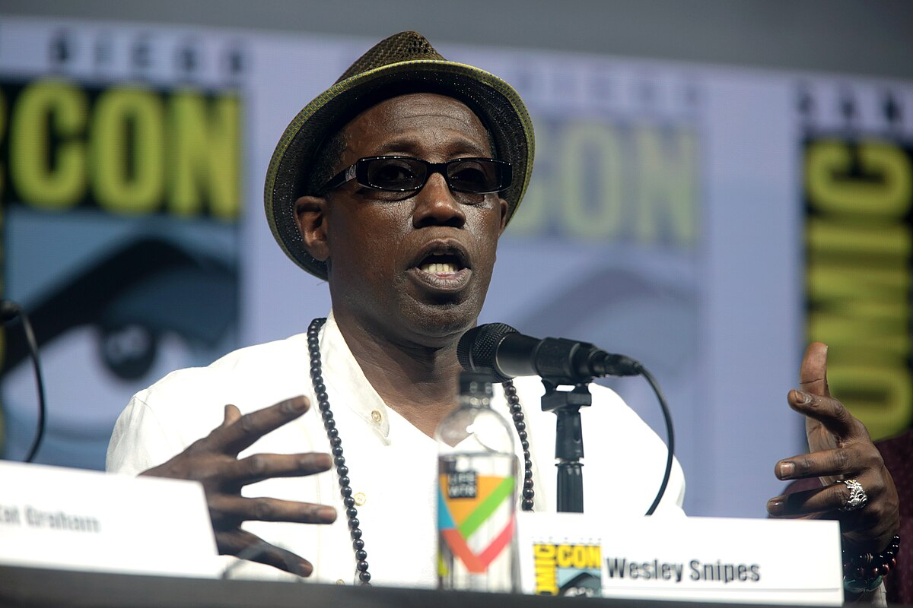
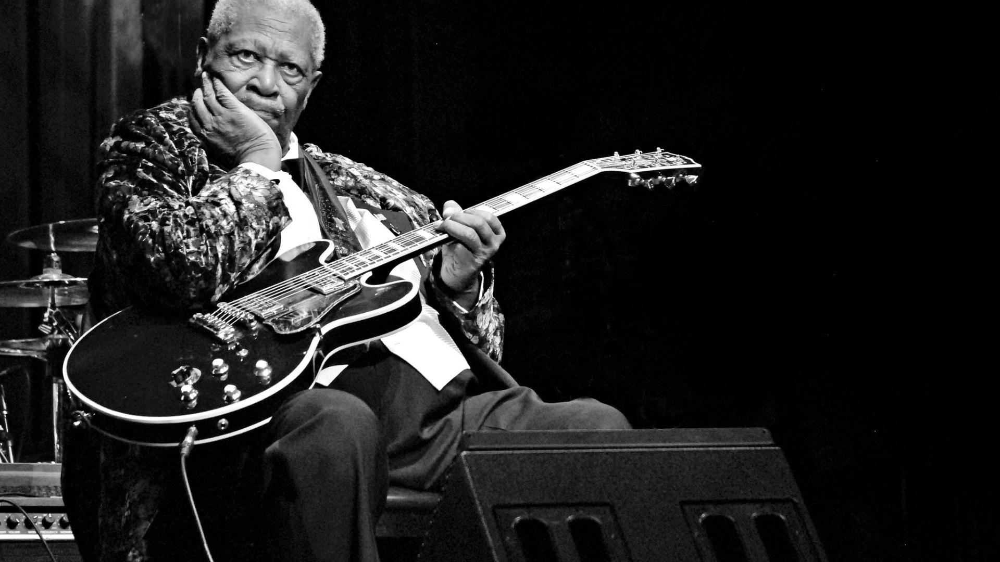

The Essence of The Album's Theme
To Pimp A Butterfly’s thematic foundation is the album’s first song, “Wesley’s Theory”, understanding it is vital to understanding the album’s messaging and it’s portrayal of struggles in the black community. The song effectively introduces listeners to Lamar’s experience with financial insecurity, exploitation, success, greed, and systemic racism in America. This perfectly sets the stage for the rest of the album’s exploration of life after fame. The song begins with Lamar making it big in the rap scene following the success of his previous studio album, good kid, m.A.A.d city; “When I get signed, homie, I'ma act a fool / Hit the dance floor, strobe lights in the room” (Lamar). Lamar talks about getting signed, sign is defined as “to engage or hire by securing the signature of on a contract of employment” (“Sign,” def. 4), and behaving rambunctiously once he is signed. This is followed by Lamar stating, “I'ma buy a brand new Caddy on vogues / Trunk the hood up, two times, deuce-four” (Lamar). In these lyrics, it seems that Lamar is selfishly spending his earnings on luxury items like cars without thinking of anyone else. Soon after, Lamar also mentions buying guns and promoting gun violence with the help of the CIA;
When I get signed, homie, I'ma buy a strap
Straight from the CIA, set it on my lap
Take a few M-16s to the hood
Pass 'em all out on the block, what's good? (Lamar).
This is a reference to former CIA operations intentionally keeping black groups marginalized by creating an influx of drugs and guns in marginalized Black communities. In these lyrics, Lamar portrays himself as a tool in the government’s agenda. He aids the CIA in their goals and operations by distributing guns to Black neighborhoods to promote gang violence and further destabilize Black communities. Following this, Lamar introduces a metaphor in the second chorus; “At first, I did love you (Love you) / But now I just wanna fuck (I just wanna fuck)” (Lamar). This relates to lyrics in the first chorus, where Lamar also sang, “You was my first girlfriend / Bridges burned, all across the board” (Lamar). Initially, this may seem to reference a past relationship with a woman Lamar loved. But now that Lamar has established the rap industry as a point of focus for this song, it’s clearer that Lamar is talking about the music industry, and the girlfriend he spoke about is a metaphor for the rap genre. Rap was his first love, with which he had a passionate relationship, but he has since abandoned that love for lust: a transactional, shallow relationship. While Lamar initially wanted to achieve greater things and a higher legacy in the music industry, he ultimately gave in to the temptation of greed and superficial pleasure. Subsequently, Lamar continues rapping from a different perspective; “What you want you? A house or a car? / Forty acres and a mule, a piano, a guitar? / Anythin', see, my name is Uncle Sam, I'm your dog” (Lamar). Lamar is suggested to make various purchases and spend lavishly by Uncle Sam in these lyrics. According to Investopedia, “‘Uncle Sam’ is a personified representation of either the United States federal government or the United States of America in general. In finances, Uncle Sam can refer to a specific tax or regulatory authority—or more specifically, the Internal Revenue Service (IRS)” (Hayes). Lamar continues rapping from Uncle Sam’s perspective and references taxes; “Don't have receipts (Oh, man, that's fine) / Pay me later, wear those gators” (Lamar). In these lyrics, Uncle Sam tells Lamar it’s alright if he doesn’t keep track of his purchases, and Lamar should worry about paying Uncle Sam his share later on. With Uncle Sam being the taxman, the money he is owed is taxes, and he essentially tells Lamar to worry about taxes some other time. Uncle Sam also encourages Lamar to wear alligator skin. Clothing with alligator skin is often an expensive luxury item; once again, Uncle Sam encourages Lamar to spend his money liberally. Now at the end of the song, Lamar ends his final verse still in Uncle Sam’s perspective; “But remember, you ain't pass economics in school / And everything you buy, taxes will deny / I'll Wesley Snipe your ass before thirty-five (Yeah)” (Lamar). Uncle Sam emphasizes that Lamar has little financial literacy as a result of American schools in marginalized communities failing to teach financial literacy. This means Lamar could recklessly spend all his money on purchases Uncle Sam encouraged him to make, leaving Lamar penniless when he needs to pay his taxes to Uncle Sam. As a result, Lamar would be imprisoned for failure to pay taxes, similar to the famous actor Wesley Snipes, mentioned in these lyrics and the song title. According to Reuters, he was convicted for failure to pay over eleven million dollars in taxes in 2008 (Liston). If the same happened to Lamar, he would be imprisoned before he’s old enough to run for president. In this song, Lamar realizes the system is a trap: get tempted into making opulent purchases and living a luxurious lifestyle by America with money that America made sure people from his marginalized community didn’t have the skills to manage. Ultimately, leaving him penniless and in prison, rendering him unable to usher change within his community as the cycle continues. With this song, Lamar introduces key themes of financial insecurity, exploitation, success, greed, and systemic racism in America that unfold throughout the album and segues into related topics, accompanied by more jazz, blues, lyricism, and literary devices to tell Lamar’s narrative. Lamar’s personal story of America mistreating him reflects a well-known experience across Black communities.

Image of Wesley Snipes below via Wikimedia Commons
Outside The Cocoon
Black Lives Matter Logo on the right via Wikimedia Commons
The political and social climate during the release of this album is essential context for understanding the album’s purpose. Black Lives Matter, defined as “a movement founded in 2013 to end white supremacy and support Black communities” (“Black Lives Matter”), was a large contributor to the political and social climate during the release of the album in 2015; “On August 9, 2014, Black Lives Matter members took their grievances to the streets for the first time” (Ruffin). These protests carried over into 2015; “Between August 2014 and August 2015, Black Lives Matter chapters around the world have organized more than nine hundred and fifty protest demonstrations” (Ruffin). The album was released in March of 2015, meaning it debuted as the social outrage and dialogues over racism, oppression, police brutality, and social injustice reached their heights. All of these struggles are addressed in the album by Lamar, making the social context highly pertinent to the music. These struggles came to light through a series of events. One such event that fueled social outrage was the death of Michael Brown; “Brown’s death had been a notable flashpoint for the B.L.M. movement. After being shot by police officer Darren Wilson, Brown’s body lay on the asphalt of Canfield Drive in Ferguson, Missouri for four and a half hours, demonstrating an additional level of disrespect. Ferguson Committeewoman Patricia Bynes said: ‘it also sent the message from law enforcement that ‘we can do this to you any day, any time, in broad daylight, and there’s nothing you can do about it.’ When a grand jury chose not to indict Wilson three months later, many felt this message had been confirmed” (Dilliplane 334). Bynes’ statement reflects frustration and fear in the black community, as well as law enforcement feeling free to carry out such killings. America’s tolerance is also evident in Wilson not being indicted by a grand jury. Once again, Lamar addresses such struggles in the album. In the song “Alright” by Kendrick Lamar from To Pimp A Butterfly, Lamar directly addresses police killings; “And we hate po-po / Wanna kill us dead in the street for sure” (Lamar). In these lyrics, Lamar states the black community's dislike for police and the police’s desire to kill members of the black community. Lamar's release of such a song during widespread outrage over police brutality and racism adds to the conversation on these struggles. Additionally, this song was recognized by the Black Lives Matter movement; “As if to symbolize its rise as a new generation of activists with a broader, more inclusive view of freedom, Black Lives Matter selected Kendrick Lamar’s song “Alright” as the closing theme of its first national conference held in Cleveland, Ohio, in July 2015, precisely because it is socially conscious hip-hop” (Ruffin). The movement’s use of the song underscores how relevant the messaging of the album was to the contemporary struggles. It also shows that not only was the album influenced by the social and political climate, but contributed to the conversation of the struggles within the climate. With the album releasing at a time of turmoil in the black community and directly addressing police killings that sparked such turmoil, To Pimp A Butterfly does not only reflect the contemporary struggles of the black community, but also add to the relevant conversation of racism and social justice.
“they tried to rig the game but you can’t fake influence” (NFL and Lamar 00:10:12 - 00:10:14) said Lamar at the 59th Superbowl Halftime Show.
Background image above via Rawpixel
Perspectives
Use Of Blues: Homage and Emotion
Image of blues musician via GoodFon

Some believe To Pimp A Butterfly is renowned for its use of blues, a genre of music historically used by the Black community to heal trauma and push through hard times. Joseph Sayeed shares this belief, Joseph uses Ralph Ellison’s definition of blues as “an autobiographical chronicle of personal catastrophe expressed lyrically” (qtd. in Joseph 3). This definition of blues frames the genre as a way of honestly expressing emotions and tragedy. With this, Joseph proceeds to describe the effect of blues and his interpretation of the album; “The healing that people experienced came through confessing and confronting the blues. Healing was not sudden, but rather the blues gave strength to both individuals and the community, helping Black people to continue carrying the load. Kendrick Lamar’s TPAB connects with this historical trademark of perseverance in the blues tradition and the larger Black experience” (Joseph 4). Joseph emphasizes the Black community relying on music, particularly the blues, to convey emotion and heal through brutally honest and emotional music. He also says Lamar doesn’t just revive the traditional genre of blues known to heal his community, but uses the genre as a fountain of endurance, perseverance, and strength, transforming the album into a medium for healing and an homage to Black history. Joseph further connects the album to such methods of healing, stating Lamar’s use of blues to heal the Black community through different songs on the album. One example Joseph examines of Lamar’s use of blues is in the song “u” by Kendrick Lamar; “In the song ‘U,’ Kendrick lashes out his resentment on himself. He exhibits an episode of depression, anger, and suicidal thoughts that growing up and leaving Compton has had on him, especially as a rap artist. He feels resentment towards himself for not being able to influence his family and friends, like his fans, to live a better life” (Joseph 6). Joseph soon after connects this confession in “u” to the blues; “This links back to the blues through the process of confession to expel the blues. When he says, ‘loving you is complicated,’ he is acknowledging all the self-hate stored inside. This process allows him to come to terms with his humanity” (Joseph 6). In tandem, these two quotes show how Joseph sees Lamar’s use of blues to tell a story about raw personal emotion and healing. Joseph summarizes “u” as an emotional episode for Lamar, encapsulating his survivor’s guilt, volatile emotions, self-destructive mental state, and self-loathing. All of which is expressed through the blues, leaving the song with a sense of acceptance and making the song a form of healing. To Joseph, To Pimp A Butterfly stands out for its use of blues in a modern rap album to encourage resilience and healing, especially in the Black community. While Joseph’s perspective argues that the use of blues in the album is what makes it renowned, I see Lamar’s use of blues differently. The use of blues throughout the album, particularly in the song “u”, compels me as a listener to better understand the emotions Lamar is conveying. I believe Lamar’s use of blues is more of a tool to amplify his emotions, and the influence of blues is not the core reason for its reverence.
Musical Intricacy and Messaging
Image piano performer via StockCake
Some others believe that Lamar’s use of innovative and intricate flows in tandem with the song’s instrumentals in To Pimp A Butterfly are why the album is renowned. John J. Mattessich, who shares this perspective, uses Kyle Adams’ definition of flow; “all of the rhythmical and articulative features of a rapper’s delivery of the lyrics” (qtd. in Mattessich 1). With this definition, Mattessich analyzes flows from several songs throughout the album. One song Mattessich analyzes for its flow is “For Free? - Interlude” by Kendrick Lamar; “The vocal line is entirely self-generative with respect to its structure and motivic content. Lamar creates an independent structure and develops that structure using only the sounds of the words in the lyrics, as well as his accents and the cadence in his delivery” (Mattessich 9). In this quote, Mattessich’s analysis states the flow of the song is independent of other elements within the song. Mattesich later elaborates on the distinctive nature of this flow. He compares Lamar’s flow on the song to conventional flows in hip-hop; “This self-generative nature differs significantly from the standard text-music relationship in hop hop, moving away from Walser’s model, which privileges a strict adherence (at a basic structural level) of instrumental track and flow to the same meter” (Mattessich 9). Mattessich underscores how unconventional this flow is. It breaks norms of lyrics having a certain cohesion with the song’s instrumental and pace. Moving away from the distinct nature of lyrics within the album Mattessich moves onto the messaging the flows. Continuing his analysis on “For Free - Interlude”, Mattessich details “A focus on the dynamic of the rapper, the instrumental track, and the relationship between the two might suggest a politics of art, or help uncover a musical subjectivity present in the work. My musical analysis has revealed a structure that builds throughout the song to a climax in the final section, which is predicated on the disjunction of flow and instrumental track” (Mattessich 23). Soon after, Mattesich speaks on the substantial meaning brought about by the flow; “The musical disjunctures as well as the forceful lyricism gesture toward a more complex reading of the song” (Mattessich 23). This shows that Lamar manipulates flow to deliver a dissonance during a weighted message, creating chaos in the song for a unique delivery. Essentially, To Pimp A Butterfly’s use of unorthodox and innovative flows to deliever unique and meaningful messages is why some believe the album is renowned. I partially agree with this perspective. Like the use of blues in the album, I believe that the flows are another tool used to create dissonance or harmony in different songs. I feel the use of flows is a more prominent aspect of the album than its use of blues. While the flows play a large role in the album, the album isn’t renowned for how it uses this tool.
Synthesis
Flows and Blues: Combining The Perspectives
Image via Shutterstock

Both Joseph and Mattessich focus on different aspects of the album. Joseph focuses on Lamar’s use of blues, a genre historically significant to roots in the Black community, to convey emotion and healing throughout the album, especially in songs like “u”. Meanwhile, Mattessich focuses on the unique flows and how they’re manipulated to convey messages, break norms, and innovate lyricism. Despite having different views on why the album is renowned, both perspectives acknowledge the album’s cultural significance and advocacy for the Black community. Joseph describes the connection between Lamar’s use of blues to the Black community; “Healing was not sudden, but rather the blues gave strength to both individuals and the community, helping Black people to continue carrying the load. Kendrick Lamar’s TPAB connects with this historical trademark of perseverance in the blues tradition and the larger Black experience” (Joseph 4). Joseph expresses that the album effectively creates a close relation with Black culture via the use of blues to create emotional resilience within the album. Likewise, Mattessich pays heed to what the album does well by addressing its messaging. Mattessich highlights the albums ability to speak on struggles that often have little advocacy and are difficult to put into perspective; “His performance is a testament not just to the potential of hop hop to speak profound truths to power, but also to say what cannot be said—what must be lived, felt, seen, and heard in the politics of everyday life” (Mattessich 28). Mattessich also mentions that the album goes beyond hip-hop in what it accomplishes. It advocates for struggles in a way that should be held dear beyond hip-hop. Combining these different perspectives, the album's use of blues pays homage to Black history while adding emotional depth to the album; simultaneously, the flows convey messages about contemporary struggles effectively. With this, Lamar contributes to conversations of current struggles that feel reminiscent of old ones, making the album feel like it doesn’t refer to a specific time period when it very much does. Thus, the album is made timeless, all while being significantly relevant to the time it was released. Ultimately, the album captures a specific period of struggle and manages to immortalize it.
Conclusion
Tools Building a Perspective
Image via Shutterstock
I believe that To Pimp A Butterfly isn’t renowned just for its musical intricacy, or its use of historic music genres, but the perspective it gives listeners of Black America which is effectuated by musical intricacy and use of historic music genres. Lamar uses flows with clever lyricism and the blues to induce a sense of perspective on the listener. The flows/lyricism convey messages about Black America, while the use of a historically Black music genre adds emotion and helps listeners understand Black culture and struggle. Before this project, I had mostly considered the lyricism within the album as the reason it was renowned, but in my I considered aspects of the album I never had before. I never considered the significance of blues and how powerful it was for Lamar to use it in a time of struggle for the Black community. I had also never considered the flow’s alignment to the instrumental, or lack thereof, being used so intentionally. This raised a question for me: how has the album influenced other albums to be more emotionally transparent and advocate for problems that lack advocacy? Moving forward, I would like to look more into the Black history aspect of the album. Especially since the perspective detailing the use of blues in the album piqued my interest. To further investigate I will take a course on Black history next semester.
Works Cited
Works Cited
Bauer, Pat, and Dylan Shulman. “Kendrick Lamar | Biography, Albums, & Facts.” Encyclopædia Britannica, 2019, www.britannica.com/biography/Kendrick-Lamar.
“Black Lives Matter.” Merriam-Webster.com Dictionary, Merriam-Webster, https://www.merriam-webster.com/dictionary/Black%20Lives%20Matter.
Dilliplane, Daniel. “Staging Progressive Dissensus and the Politics of Black Silence: Black Lives Matter, Bernie Sanders, and the August 2015 Rally in Seattle.” Communication & Critical/Cultural Studies, vol. 20, no. 3, Sept. 2023, pp. 325–42. EBSCOhost, https://doi-org.proxy.libraries.rutgers.edu/10.1080/14791420.2023.2229412.
Fantano, Anthony. “Kendrick Lamar - to Pimp a Butterfly ALBUM REVIEW.” Www.youtube.com, 18 Mar. 2015, www.youtube.com/watch?v=qTmHuavOXNg.
Hayes, Adam. “Uncle Sam Definition.” Investopedia, 12 June 2022, www.investopedia.com/terms/u/uncle-sam.asp.
Joseph, Sayeed. “‘We Gon’’ Be Alright’: Mental Health and the Blues in Kendrick Lamar’s To Pimp a Butterfly.’” Ethnomusicology Review, vol. 21, Jan. 2017, pp. 1–8. EBSCOhost, research.ebsco.com/linkprocessor/plink?id=776a63c6-5222-3cc8-8538-7d965a385d5b.
Lamar, Kendrick. "Alright." Genius, https://genius.com/Kendrick-lamar-alright-lyrics.
Lamar, Kendrick. “Alright” To Pimp A Butterfly, Aftermath/Interscope (Top Dawg Entertainment), 2015. https://open.spotify.com/track/3iVcZ5G6tvkXZkZKlMpIUs?si=47eb704be1144526.
Lamar, Kendrick. “For Free? - Interlude.” To Pimp A Butterfly, Aftermath/Interscope (Top Dawg Entertainment), 2015. https://open.spotify.com/track/75izAeHlGuOgA865CFDyIv?si=d060e411e53b4822.
Lamar, Kendrick. To Pimp a Butterfly. Aftermath/Interscope (Top Dawg Entertainment), 2015.
Lamar, Kendrick. “u” To Pimp A Butterfly, Aftermath/Interscope (Top Dawg Entertainment), 2015. https://open.spotify.com/track/1bxEpNR75Hq3T2oF9AZjt8?si=deb6a20100f8492b.
Lamar, Kendrick. "Wesley's Theory." Genius, https://genius.com/Kendrick-lamar-wesleys-theory-lyrics.
Lamar, Kendrick. “Wesley’s Theory.” To Pimp A Butterfly, Aftermath/Interscope (Top Dawg Entertainment), 2015. https://open.spotify.com/track/7Ks4VCY1wFebnOdJrM13t6?si=c3362ff08f874410.
Liston, Barbara. “Wesley Snipes Faces 3 Years for Tax Conviction.” Reuters, 1 Feb. 2008, www.reuters.com/article/lifestyle/wesley-snipes-faces-3-years-for-tax-conviction-idUSN01461178/.
Mattessich, John J. "This Flow Ain’t Free: Generative Elements in Kendrick Lamar’s To Pimp a Butterfly." Music Theory Online, vol. 25, no. 1, 2019. ProQuest, https://login.proxy.libraries.rutgers.edu/login?qurl=https%3A%2F%2Fwww.proquest.com%2Fscholarly-journals%2Fthis-flow-ain-t-free-generative-elements-kendrick%2Fdocview%2F2233762922%2Fse-2%3Faccountid%3D13626.
NFL, and Kendrick Lamar. “Kendrick Lamar’s Apple Music Super Bowl Halftime Show.” YouTube, NFL, 9 Feb. 2025, www.youtube.com/watch?v=KDorKy-13ak.
Ruffin, Herbert G., II. “Black Lives Matter: The Growth of a New Social Justice Movement • BlackPast.” BlackPast, 23 Aug. 2015, www.blackpast.org/african-american-history/black-lives-matter-growth-new-social-justice-movement/.
“Sign, V. (4).” Merriam-Webster.com Dictionary, Merriam-Webster, https://www.merriam-webster.com/dictionary/sign.